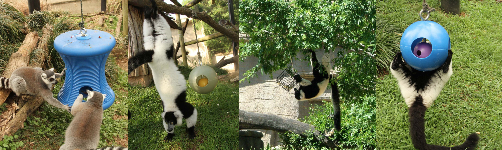
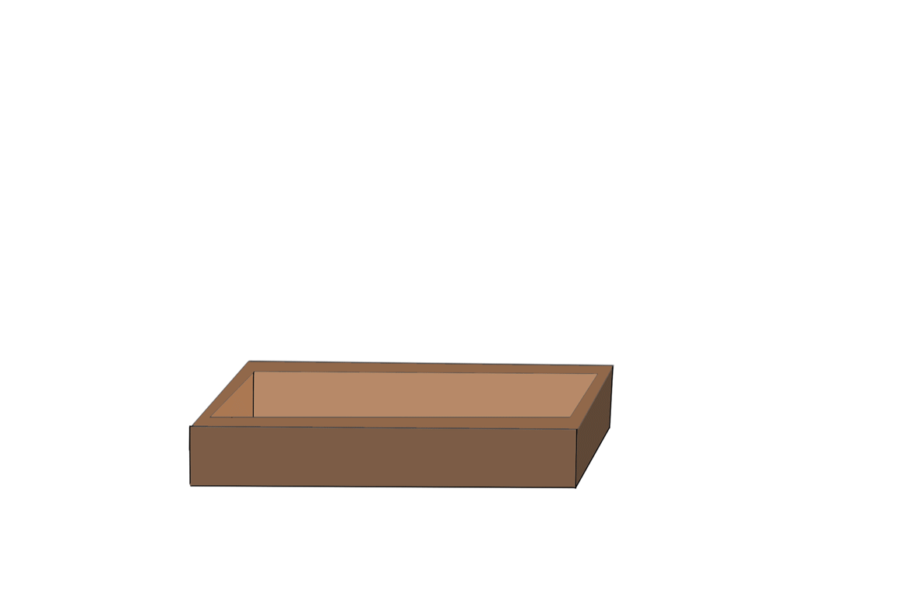

Week 4-5
Enrichment Prototype for Ring-tailed Lemurs
Big Idea: To create an enrichment intervention– a ground-based foraging extraction platform that challenges Ring-tailed lemurs to work for harvesting food through digging and probing, ultimately promoting their natural behaviors and improving welfare in a zoo setting.
User: a Ring-tailed Lemur

Initial development goals:
1. Highlight the relation of behaviors to affordances in each of the proposals2. Invite the lemurs to interact with it
3. Look for new behaviors rather than just sticking to the feeding mechanism
4. Make the enrichment intervention challengingly and pleasantly engaged
5. Optimize the building structure and find durable materials for easier zoo maintenance
6. Back up every behavior, steps of interaction with research and potential speculation

While I’m exploring the answers to these questions, I started to do more research on specific behaviors and habits of Ring-tailed lemur, which will hopefully give me new insights into developing the affordances of any of my proposal. I found a report written by Tracy Fenn, the supervisor of mammals at Jacksonville Zoo, called “Behavior-based husbandry for lemurs.” He listed key points that further pinpoints the importance of creating based on species’ natural history and individual needs and creating responsive to objective evidence of welfare. It reminded me that my intervention will need to be durable, flexible in formats, and fits Lemurs’ natural behaviors.


Insight: Ring-tailed lemurs spend a lot of time on the ground, which is unusual among lemur species.
many food probing toys found(not just Ring-tailed lemurs)are hung. It'd be unique to have something that follows their natural behavior.
Initial Sketch for the box structure:
I encountered a paper called “Lemur Use of Hands Versus Mouth” that presented how most Ring-tailed lemurs are left-handed. Meanwhile, when foraging and feeding, Ring-tailed lemurs tend to use a single hand rather than both hands. How the was measured was through determining “If a hand was used to bring food or some other object to the mouth, the specific hand utilized was recorded”.

That means when interacting with the box, potentially Ring-tailed lemurs will probe and grab the food with one hand to deliver to the mouth. That means gauging the opening gaps doesn’t need to consider fitting both hands of a lemur as long as the gap fits one, and potentially their other hand will be simultaneously used to pull the string or dig into other gaps for food.
More questions for developing the prototype for the "Ground foraging grid box":
1. What materials should I use for durability and safety?
2. How to make it more challenging and engaging for lemurs to interact with?
3. Will lemurs compete and incite fights with each other through food probing?
4. What if one claim territory over the box?
5. Can this box only exist on the ground/underground? Can it change form and replacement?
6. How to make it hard to break or to hack for the lemurs while easy for the zookeeper to maintain and update?
7. What are some of the specific locations within the captivated environment can this intervention be placed?
Potential prototype 2:
While I’m in the process of prototyping the box, I generated some new insights for the sunbathing project. (sketch below)
My original idea is to create a rotatory outdoor platform that allows multiple lemurs to sunbath whenever they want. However, I realized such a platform might not be as necessary in an outdoor/always sunny environment like San Diego zoo, as they can easily move to a sunny spot, However, in many other zoos like Bronx zoo, lemurs are kept indoors during the winter season. Sunning behavior is important for lemurs' thermoregulatory function, which is also the best example of lemur species-specific behavior. In Taylor Shire’s paper” Differences in behavior between captive and wild ring-tailed lemur populations: Implications for reintroduction and captive management, she mentioned: “ Indoor enclosures are temperature controlled using centralized heating or heat lamps. In this situation, sunning no longer serves a thermoregulatory function and therefore we would expect that 1) lemurs in captivity will spend less time sunning than wild lemurs and 2) lemurs housed in indoor enclosure will spend less time sunning than those housed outdoors.
So it really depends on when and where were these ring-tailed lemurs raised. If it has always been indoors, the opportunity for an outdoor sunbathing spot might not be efficient. Mean while, Shire also mentioned in her paper that “ the absence of this
behavior may indicate that the lemurs have no exposure to natural stimuli and may not engage in other species-specific behaviors.” That means it’s significant to an extent for ring-tailed lemur to be able to perform this behavior, if we can imitate a natural stimuli. Lemurs are usually found in social group. In a captivated setting, social groups are usually “artificially managed”(Shire, 2012) due to transferring among institutions, so lemurs could actually encounter more frequent agnostic behaviors. So ideally and speculatively, if Ring-tailed lemurs are in an indoor setting or under terrible weathers, if an artificial sunlight can be introduced and a familiar figure can be introduced to start the sunbathing, potentially others would follow and even re-adapt it. The artificial sunlight will imitate not only the color temperature but also the thermal temperature of the sun, and the lemur decoy can be marked with a female scent(female-dominant social group) that other lemurs feel very familiar to.